📡
Redes inalámbricas
- Enlaces punto a punto hasta 24 km
- Instalación, alineación y configuración de antenas
- Administración y monitoreo de enlaces
Tecnólogo en Redes de Datos · Colombia
Trabajo en redes e infraestructura — enlaces inalámbricos de larga distancia, servidores Linux y servicios en la nube — y mi fuerte es automatizar con IA: agentes y bots que hacen el trabajo repetitivo por mí.

Soy Tecnólogo en Redes de Datos y voy camino a ingeniero. No puedo usar algo sin preguntarme cómo funciona: me pasa con un mensaje de WhatsApp que llega desde el otro lado del mundo igual que con un bot que decide qué responder. Termino haciendo ingeniería inversa por gusto.
Me adapto rápido y soy recursivo: cuando no hay camino claro, lo improviso. Si de mí depende, la solución aparece — aunque tenga pocas herramientas a mano.
Empecé en lo físico —cableado, equipos, voltajes, impresoras— y fui subiendo a lo lógico: redes, servidores, cloud. Hoy mi terreno favorito es la IA agéntica: convertir procesos manuales y caóticos en sistemas que piensan, responden y entregan solos.
No escribo código desde cero: le doy el trabajo pesado a la IA. Herramientas, lógica y resultados — eso sí lo entiendo completo.
Agentes que asesoran, razonan, toman pedidos, agendan citas y consultan la base de datos en tiempo real. Varios negocios, varios bots.
Tomo el Excel que nadie entiende y lo convierto en un dashboard limpio: gráficas, filtros y todo al instante.
Cada día a las 7:00 AM llegaba solo un listado de IPs públicas a mi bandeja: reconocimiento automatizado con scheduling.
Mi bitácora de aprendizaje: TILs, notas y experimentos. Aprender en público, un commit a la vez.
Ver repo ↗Redes, infraestructura y automatización con IA. Escríbeme y hablamos.